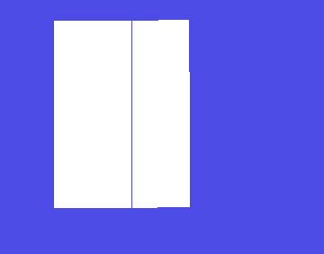

Drawing connected UI quads show a gap. The points of the left of the 2nd quad are equal to points on the right of the 1st quad.
I don’t expect there to be a gap, but why does it show?

Quads: (top left, top right, bottom left, bottom right)
RectQuad quadList[2] =
{
// a0, b0, c0, d0
{ Vector2(110.008f, 116.000f), Vector2(196.595f, 116.192f), Vector2(109.991f, 323.999f), Vector2(196.684f, 324.191f) },
// a1, b1, c1, d1 where a1 = b0, c1 = d0
{ Vector2(196.595f, 116.192f), Vector2(260.244f, 114.675f), Vector2(196.684f, 324.191f), Vector2(261.163f, 322.588f) },
};Simple test code
drop it into and replace Samples/37_UIDrag/UIDrag.cpp
[spoiler][code]
// Copyright © 2008-2016 the Urho3D project.
//
// Permission is hereby granted, free of charge, to any person obtaining a copy
// of this software and associated documentation files (the “Software”), to deal
// in the Software without restriction, including without limitation the rights
// to use, copy, modify, merge, publish, distribute, sublicense, and/or sell
// copies of the Software, and to permit persons to whom the Software is
// furnished to do so, subject to the following conditions:
//
// The above copyright notice and this permission notice shall be included in
// all copies or substantial portions of the Software.
//
// THE SOFTWARE IS PROVIDED “AS IS”, WITHOUT WARRANTY OF ANY KIND, EXPRESS OR
// IMPLIED, INCLUDING BUT NOT LIMITED TO THE WARRANTIES OF MERCHANTABILITY,
// FITNESS FOR A PARTICULAR PURPOSE AND NONINFRINGEMENT. IN NO EVENT SHALL THE
// AUTHORS OR COPYRIGHT HOLDERS BE LIABLE FOR ANY CLAIM, DAMAGES OR OTHER
// LIABILITY, WHETHER IN AN ACTION OF CONTRACT, TORT OR OTHERWISE, ARISING FROM,
// OUT OF OR IN CONNECTION WITH THE SOFTWARE OR THE USE OR OTHER DEALINGS IN
// THE SOFTWARE.
//
#include <Urho3D/Core/CoreEvents.h>
#include <Urho3D/UI/Button.h>
#include <Urho3D/UI/Font.h>
#include <Urho3D/UI/Text.h>
#include <Urho3D/UI/UIEvents.h>
#include <Urho3D/Graphics/Zone.h>
#include “UIDrag.h”
#include <Urho3D/DebugNew.h>
//=============================================================================
//=============================================================================
class UIQuad : public UIElement
{
URHO3D_OBJECT(UIQuad, UIElement);
public:
static void RegisterObject(Context* context);
UIQuad(Context *context);
~UIQuad();
virtual void GetBatches(PODVector<UIBatch>& batches, PODVector<float>& vertexData, const IntRect& currentScissor);
void SetBlendMode(BlendMode mode) { blendMode_ = mode; }
void SetImgRect(const IntRect& rect) { imageRect_ = rect; }
void SetTexture(Texture* texture);
void AddQuad(Vector2 &a, Vector2 &b, Vector2 &c, Vector2 &d);
protected:
void ClearBatches();
protected:
SharedPtr texture_;
float invTextureWidth_;
float invTextureHeight_;
IntRect imageRect_;
BlendMode blendMode_;
PODVector vertexData_;
PODVector batches_;
};
//=============================================================================
//=============================================================================
URHO3D_DEFINE_APPLICATION_MAIN(UIDrag)
//=============================================================================
//=============================================================================
UIDrag::UIDrag(Context* context) :
Sample(context)
{
UIQuad::RegisterObject(context);
}
void UIDrag::Start()
{
// Execute base class startup
Sample::Start();
GetSubsystem<Renderer>()->GetDefaultZone()->SetFogColor(Color(0.3f, 0.3f, 0.9f));
// Set mouse visible
String platform = GetPlatform();
if (platform != "Android" && platform != "iOS")
GetSubsystem<Input>()->SetMouseVisible(true);
// Create the UI content
CreateGUI();
CreateInstructions();
// Hook up to the frame update events
SubscribeToEvents();
// Set the mouse mode to use in the sample
Sample::InitMouseMode(MM_FREE);
}
void UIDrag::CreateGUI()
{
ResourceCache* cache = GetSubsystem();
UI* ui = GetSubsystem();
UIElement* root = ui->GetRoot();
root->SetDefaultStyle(cache->GetResource<XMLFile>("UI/DefaultStyle.xml"));
// UI quads
Texture2D *quatTex2d = cache->GetResource<Texture2D>("Textures/UI.png");
UIQuad *uiQuad = root->CreateChild<UIQuad>();
// the IntRect(84,87,85,88) position is where the white rectangle is in the UI.png
uiQuad->SetImgRect(IntRect(84,87,85,88));
uiQuad->SetTexture(quatTex2d);
//uiQuad->SetColor(Color::RED);
struct RectQuad
{
Vector2 a, b, c, d;
};
// problem drawing ui quads is that there's a gap between the 2 quads connected
RectQuad quadList[2] =
{
// a0, b0, c0, d0
{ Vector2(110.008f, 116.000f), Vector2(196.595f, 116.192f), Vector2(109.991f, 323.999f), Vector2(196.684f, 324.191f) },
// a1, b1, c1, d1 where a1 = b0, c1 = d0
{ Vector2(196.595f, 116.192f), Vector2(260.244f, 114.675f), Vector2(196.684f, 324.191f), Vector2(261.163f, 322.588f) },
};
for ( int i = 0; i < 2; ++i )
{
uiQuad->AddQuad(quadList[i].a, quadList[i].b, quadList[i].c, quadList[i].d );
}
}
void UIDrag::CreateInstructions()
{
}
void UIDrag::SubscribeToEvents()
{
SubscribeToEvent(E_UPDATE, URHO3D_HANDLER(UIDrag, HandleUpdate));
}
void UIDrag::HandleDragBegin(StringHash eventType, VariantMap& eventData)
{
using namespace DragBegin;
Button* element = (Button*)eventData[P_ELEMENT].GetVoidPtr();
int lx = eventData[P_X].GetInt();
int ly = eventData[P_Y].GetInt();
IntVector2 p = element->GetPosition();
element->SetVar("START", p);
element->SetVar("DELTA", IntVector2(p.x_ - lx, p.y_ - ly));
int buttons = eventData[P_BUTTONS].GetInt();
element->SetVar("BUTTONS", buttons);
Text* t = (Text*)element->GetChild(String("Text"));
t->SetText("Drag Begin Buttons: " + String(buttons));
t = (Text*)element->GetChild(String("Num Touch"));
t->SetText("Number of buttons: " + String(eventData[P_NUMBUTTONS].GetInt()));
}
void UIDrag::HandleDragMove(StringHash eventType, VariantMap& eventData)
{
using namespace DragBegin;
Button* element = (Button*)eventData[P_ELEMENT].GetVoidPtr();
int buttons = eventData[P_BUTTONS].GetInt();
IntVector2 d = element->GetVar(“DELTA”).GetIntVector2();
int X = eventData[P_X].GetInt() + d.x_;
int Y = eventData[P_Y].GetInt() + d.y_;
int BUTTONS = element->GetVar(“BUTTONS”).GetInt();
Text* t = (Text*)element->GetChild(String("Event Touch"));
t->SetText("Drag Move Buttons: " + String(buttons));
if (buttons == BUTTONS)
element->SetPosition(IntVector2(X, Y));
}
void UIDrag::HandleDragCancel(StringHash eventType, VariantMap& eventData)
{
using namespace DragBegin;
Button* element = (Button*)eventData[P_ELEMENT].GetVoidPtr();
IntVector2 P = element->GetVar(“START”).GetIntVector2();
element->SetPosition§;
}
void UIDrag::HandleDragEnd(StringHash eventType, VariantMap& eventData)
{
using namespace DragBegin;
Button* element = (Button*)eventData[P_ELEMENT].GetVoidPtr();
}
void UIDrag::HandleUpdate(StringHash eventType, VariantMap& eventData)
{
}
//=============================================================================
//=============================================================================
void UIQuad::RegisterObject(Context* context)
{
context->RegisterFactory();
URHO3D_COPY_BASE_ATTRIBUTES(UIElement);
}
UIQuad::UIQuad(Context *context)
: UIElement(context)
, blendMode_(BLEND_REPLACE)
, imageRect_(IntRect::ZERO)
{
SetSize(1, 1);
}
UIQuad::~UIQuad()
{
}
void UIQuad::GetBatches(PODVector& batches, PODVector& vertexData, const IntRect& currentScissor)
{
for ( unsigned i = 0; i < batches_.Size(); ++i )
{
UIBatch &batch = batches_[ i ];
unsigned beg = batch.vertexStart_;
unsigned end = batch.vertexEnd_;
batch.vertexStart_ = vertexData.Size();
batch.vertexEnd_ = vertexData.Size() + (end - beg);
vertexData.Resize( batch.vertexEnd_ );
memcpy( &vertexData[ batch.vertexStart_ ], &vertexData_[ beg ], (end - beg) * sizeof(float) );
UIBatch::AddOrMerge( batch, batches );
// restore
batch.vertexStart_ = beg;
batch.vertexEnd_ = end;
}
}
void UIQuad::SetTexture(Texture* texture)
{
texture_ = texture;
invTextureWidth_ = 1.0f/(float)texture_->GetWidth();
invTextureHeight_ = 1.0f/(float)texture_->GetHeight();
}
void UIQuad::ClearBatches()
{
vertexData_.Clear();
batches_.Clear();
}
void UIQuad::AddQuad(Vector2 &a, Vector2 &b, Vector2 &c, Vector2 &d)
{
struct VertexData
{
float x;
float y;
float u;
float v;
Color col;
};
VertexData ver[6];
ver[0].x = a.x_;
ver[0].y = a.y_;
ver[0].u = (float)imageRect_.left_ * invTextureWidth_;
ver[0].v = (float)imageRect_.top_ * invTextureHeight_;
ver[0].col = color_[C_TOPLEFT];
ver[1].x = b.x_;
ver[1].y = b.y_;
ver[1].u = (float)imageRect_.right_ * invTextureWidth_;
ver[1].v = (float)imageRect_.top_ * invTextureHeight_;
ver[1].col = color_[C_TOPRIGHT];
ver[2].x = d.x_;
ver[2].y = d.y_;
ver[2].u = (float)imageRect_.right_ * invTextureWidth_;
ver[2].v = (float)imageRect_.bottom_ * invTextureHeight_;
ver[2].col = color_[C_BOTTOMRIGHT];
ver[3].x = a.x_;
ver[3].y = a.y_;
ver[3].u = (float)imageRect_.left_ * invTextureWidth_;
ver[3].v = (float)imageRect_.top_ * invTextureHeight_;
ver[3].col = color_[C_TOPLEFT];
ver[4].x = d.x_;
ver[4].y = d.y_;
ver[4].u = (float)imageRect_.right_ * invTextureWidth_;
ver[4].v = (float)imageRect_.bottom_ * invTextureHeight_;
ver[4].col = color_[C_BOTTOMRIGHT];
ver[5].x = c.x_;
ver[5].y = c.y_;
ver[5].u = (float)imageRect_.left_ * invTextureWidth_;
ver[5].v = (float)imageRect_.bottom_ * invTextureHeight_;
ver[5].col = color_[C_BOTTOMRIGHT];
// scissor min/max
int minx = M_MAX_INT, miny = M_MAX_INT;
int maxx = -M_MAX_INT, maxy = -M_MAX_INT;
for ( int i = 0; i < 6; ++i )
{
if ((int)ver[i].x < minx ) minx = (int)ver[i].x;
if ((int)ver[i].x > maxx ) maxx = (int)ver[i].x;
if ((int)ver[i].y < miny ) miny = (int)ver[i].y;
if ((int)ver[i].y > maxy ) maxy = (int)ver[i].y;
}
IntRect scissor(minx, miny, maxx, maxy);
UIBatch batch( this, blendMode_, scissor, texture_, &vertexData_ );
unsigned begin = batch.vertexData_->Size();
batch.vertexData_->Resize(begin + 6*UI_VERTEX_SIZE);
float* dest = &(batch.vertexData_->At(begin));
// set start/end
batch.vertexStart_ = begin;
batch.vertexEnd_ = batch.vertexData_->Size();
for ( int i = 0; i < 6; ++i )
{
dest[0+i*UI_VERTEX_SIZE] = ver[i].x;
dest[1+i*UI_VERTEX_SIZE] = ver[i].y;
dest[2+i*UI_VERTEX_SIZE] = 0.0f;
((unsigned&)dest[3+i*UI_VERTEX_SIZE]) = ver[i].col.ToUInt();
dest[4+i*UI_VERTEX_SIZE] = ver[i].u;
dest[5+i*UI_VERTEX_SIZE] = ver[i].v;
}
UIBatch::AddOrMerge( batch, batches_ );
}[/code][/spoiler]